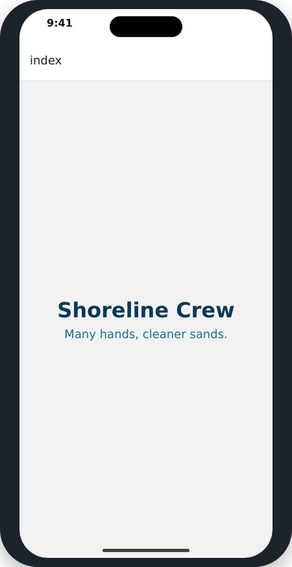

Session 1: How React Native Works and Your Toolchain
How to teach the first session of React Native & Expo: Build and Ship a Mobile App. Welcome a room of React and TypeScript developers new to mobile, find out which machines are ready and what the room remembers about lists, copies, narrowing and state, then show with the lesson's own CleanupCard what React Native really draws (native views, no DOM; loose text is a red screen tsc never sees) and make every laptop ready: an install clinic, the course API and an Expo SDK 58 app in Expo Go or the web preview, a style typo only tsc names, two labs on what runs the code and what checks it, and a check learners can rerun all course.
How to Use This Guide
- Same rhythm for both lessons: frame (the goal and one mental model) → live demo (you type, they follow) → guided lab (a kit lab: new practice on the lesson's ideas, never the lesson's own project) → start the lesson's own project. The lesson exercises, quiz and journal are homework.
- Type, do not paste. Every command below was run to produce the output printed under it, in a learner's terminal with Node v24.22.2 and npm 11.19.1: Lesson 1.1's code in a lab folder with Expo SDK 58, React Native and Jest installed, Lesson 1.2's on the course API and on a copy of the app exactly as a learner has it at the end of the lesson. Where the lesson shows the same command, the kit's output is the lesson's, word for word. Ask for a prediction before every run.
- No phone was used to make this kit, and none is needed to teach it: Lesson 1.1 runs in Expo Snack in a browser, the labs run headless in Jest, and the web preview shows the app on the projector. What only a phone shows (Expo Go connecting, the red screen on the device, native controls) is described the way the lessons describe it, from Expo's documentation. Have your own phone with Expo Go ready to show it.
- The lessons are the reference. Keep
lesson_01.htmlandlesson_02.htmlopen in browser tabs for the tables, the diagrams and the per-system notes (WSL, the emulator sidebars). Labs live inlabs/module-01/(learners copy the kit'slabs/folder into their course foldershoreline/):starter/folders andTASKS.mdare handouts;solution/folders are yours until the session is over. - Session 1 is different in two ways. It opens with 30 minutes of welcome, environment check and diagnostic instead of the usual 10-minute warm-up, and Lesson 1.2's room time is mostly an install clinic: installing Node and VS Code, unzipping the API and running
npx create-expo-appare prework from the kit's setup guide, so the room fixes what went wrong instead of watching installers. - The kit has three parts that can each run on their own: Part 1, Foundations and Lists (Sessions 1 to 9); Part 2, Navigation, Data and Devices (10 to 17); Part 3, Motion, Quality and Shipping (18 to 26). Nothing in this session depends on a later part. Teal blocks are hands-on, amber blocks are watch-outs. Lesson codes (1.1, 1.2) match the course site.
Three installs (Node LTS, VS Code, Expo Go on the phone), a zip to unzip in the right place, npx create-expo-app downloading about 560 packages, and then the part no install fixes: a phone that must reach the laptop over Wi-Fi. Venue, school and guest networks often block device-to-device traffic, and WSL hides the laptop behind a 172. address. Done together on venue Wi-Fi, it fills three hours. Before: send the setup guide a week ahead (Node LTS, VS Code with Expo Tools, shoreline-api.zip unzipped into shoreline, npx create-expo-app@latest shoreline-crew, Expo Go on the phone, the kit's labs/ folder in shoreline with npm install run once in shoreline/labs, then the environment check) and ask every learner to reply with its last line. In the room: the check gets 12 minutes in the opening; a NOT READY machine gets a ready partner until the 25-minute install clinic at 1:40. A phone that cannot connect is NOT a reason to stop: the web preview is a valid way to finish Lesson 1.2, and Lesson 5.1 returns to networking. After: whoever is still not ready leaves with a numbered plan and runs the check again before Session 2.
Before the Session
- ☐ A week before: email the setup guide (Lesson 1.2 Steps 1 to 3 as a checklist: Node LTS 24 or newer, VS Code with the Expo Tools extension, Git, the course folder
shorelinewithshoreline-apiunzipped into it,npx create-expo-app@latest shoreline-crewinshoreline, Expo Go from the App Store or Google Play, the kit'slabs/folder copied intoshorelineandnpm installrun ONCE inshoreline/labs(one shared install for every lab of the course: about 1,400 packages, 1.1 GB, a minute or two on a good connection; nothing is installed inside the lab folders), then with the API runningnode labs/module-01/l1_0-orientation/check_environment.mjsfromshoreline). Ask learners to reply with the last line it prints (READY WITH NOTES with a "still the template" line is the expected result before class). No reply means a setup risk: chase it. - ☐ Files to hand out (shared folder or USB stick, in case the network fails): the whole
labs/folder without thesolution/folders;shoreline-api.zipandlesson-02-end.zipfrom the course site's downloads (the finished Lesson 1.2 code: a learner who cannot create the project in time unzips it and runsnpm installinshoreline-crew). If the venue network is slow, put the Node LTS installers and VS Code on the stick too, and runnpm installonce in your ownlabs/at home so your npm cache can serve the room. The labs' one shared install is about 1.1 GB: say so in the setup email, and that it is the only lab install of the whole course. - ☐ Run the kit check once:
python3 labs/check_labs.py module-01from this kit's folder (20 runs, under two minutes: the starters fail as shipped, the solutions pass their tests, type checks and lint, the debug handout fails exactly as declared, and the environment check says READY on a ready course folder and NOT READY with the right FIX line on three broken ones). It starts its own private copy of the API;--api http://localhost:4000uses yours instead. Then run the environment check on the projector machine so you can show what READY looks like. - ☐ Projector machine: VS Code open on a
shorelinefolder at a large font, two terminals ("api" runningnode server.ts, "crew" inshoreline-crew) at 18 pt or larger; a browser with Expo Snack, http://localhost:4000/api and the web preview (http://localhost:8081, once Metro runs) in tabs, the browser's device toolbar at a phone size;lesson_01.htmlandlesson_02.html; your own phone with Expo Go and the projector's screen-mirroring if you have it. For the 1.1 demo: a copy of the lab'ssolution/folder withnpm installdone, where you type the lesson's CleanupCard intoApp.tsxand add the kit's demo test (Answer Key, Lab 1.1). - ☐ Board, before learners arrive: the two mental models from Lesson 1.1 (one script, two crews; the radio and the field kit); the flow "your TSX → Metro removes the types → Hermes runs the JavaScript → Fabric draws native views" with "tsc and the linter check" beside it; the triage line "node not recognized = new terminal · nothing at :4000 = start the API · phone cannot connect = same Wi-Fi? Local Network? WSL? else web preview · tsc errors = read the first one"; and the course folder as a box:
shoreline/withshoreline-api/,shoreline-crew/andlabs/. - ☐ Print or share: the workbook (its Start Here page has the environment checklist and the diagnostic), sticky notes for help flags and the exit ticket.
| Symptom | Cause | Fix |
|---|---|---|
'node' is not recognized / command not found: node | The terminal was opened before Node was installed (old PATH) | Close every terminal, VS Code included, and open a new one; Windows: run the installer again with Add to PATH. |
node server.ts: ERR_UNKNOWN_FILE_EXTENSION, Node.js v20… | An old Node first on the PATH (the API needs 22.18 or newer) | Install the current LTS; with nvm: nvm install --lts and nvm alias default lts/*, then a new terminal. |
nothing answers at http://localhost:4000 (no a… | The API is not running, or runs on another address | Terminal 1: cd shoreline-api, node server.ts, leave it open; give the check the address the API printed. |
no shoreline-api/server.ts here / shoreline-api/shoreline-api | The check was run from the wrong folder, or the unzip tool added a level | cd into shoreline; move the inner shoreline-api up one level. |
no shoreline-crew here: in the cou… | npx create-expo-app not run (or in the wrong folder) | In shoreline: npx create-expo-app@latest shoreline-crew (answer y if npx asks). No time? Unzip lesson-02-end.zip and npm install in shoreline-crew. |
still the template (a CHECK line) | Lesson 1.2 Step 6 not done yet | Expected before class: Step 6 in the room (npm run reset-project, answer n). |
the linter is not set up yet (a CHECK line) | The first npx expo lint not run yet | Step 7: npx expo lint, answer y, then run it again (the first run ends with a CommandError: known). |
| Expo Go: the project times out / cannot connect | Different networks, a guest network that blocks devices, the firewall, iOS Local Network off, WSL's 172. address | The lesson's checklist in order; WSL: PowerShell or mirrored networking (lesson card); npx expo start --tunnel as a last try; else the web preview, a valid way to finish. |
| Expo Go says the project is incompatible | An old Expo Go (it supports one SDK, the newest) | Update Expo Go from the store (Troubleshooting). |
| Port 8081 in use: Metro asks to use another port | A second Metro (another terminal, an old run) | Use the other port it offers, or Ctrl+C the first Metro. |
npm is very slow, or the check says synced to the cloud | The course folder is inside OneDrive, iCloud or Dropbox | Move shoreline to an unsynced folder. |
No code command (a CHECK line) | VS Code's command-line launcher is not on the PATH | Command Palette › Shell Command: Install 'code' command in PATH (macOS); Windows installer's Add to PATH. Not required. |
Session 1 Agenda (3 hours)
| Clock | Minutes | Segment | What happens |
|---|---|---|---|
| 0:00 | 30 | Welcome, environment check and diagnostic | Introductions, how the course runs, check_environment.mjs on every machine, a six-question readiness diagnostic (not graded). |
| 0:30 | 10 | 1.1 Frame and mental model | One script, two crews: React writes the plan, the platform's own crew builds native views; the radio and the field kit. |
| 0:40 | 15 | 1.1 Live demo | The lesson's CleanupCard run headless: the native views it becomes, a press, then loose text: the red screen tsc never sees. |
| 0:55 | 15 | 1.1 Guided lab | labs/module-01/l1_1-how-react-native-works/starter: Task 1 in pairs, a web card rebuilt from View and Text. |
| 1:10 | 10 | 1.1 Start the lesson project | Steps 1 to 3 in Expo Snack (a browser, nothing installed). Steps 4 to 6 go home. |
| 1:20 | 10 | Break | NOT READY machines line up for the install clinic. Leave the two mental models on the board. |
| 1:30 | 10 | 1.2 Frame and mental model | Base camp and the meeting point: Metro, the QR code, Expo Go; two terminals; Metro runs, tsc and the linter check. |
| 1:40 | 25 | 1.2 Install clinic | Fix the machines that were NOT READY, by problem; ready learners help, then rerun the check. |
| 2:05 | 15 | 1.2 Live demo | Node and npm, the API's answers, npx expo start (addresses and keys), a style typo the phone ignores and tsc names, lint clean. |
| 2:20 | 15 | 1.2 Guided lab | labs/module-01/l1_2-your-toolchain/starter: Tasks 1 and 2, what runs the code and what checks it. |
| 2:35 | 15 | 1.2 Start the lesson project | Steps 4 and 6: open the app on a phone or in the web preview; reset it and write the first screen. |
| 2:50 | 10 | Wrap-up | Exit ticket (3 questions), homework, bring list for Session 2. |
| Total | 180 | Ends at 3:00. |
In the room. The lesson pages estimate 140 + 140 = 280 minutes for a learner working alone, and after the 30-minute opening, the break and the wrap-up the room has 130. Lesson 1.1 keeps its full shape (model, demo, lab, project start). Lesson 1.2's installation steps are prework from the setup guide: the room uses its time for an install clinic, a demo of what runs and what checks, a short lab and Steps 4 and 6 of the lesson project.
Goes home (about 2 to 3 hours). Lesson 1.1's project Steps 4 to 6 (compare the web and native cards, map the six screens, get the phone ready) and anything not finished in Snack; Lesson 1.2's project Steps 5 and 7 (the development loop on purpose, lint, type check, expo-doctor, commit) and anything the clinic delayed; both labs' remaining tasks and Lab 1.2's debug handout; each lesson's Hands-on Exercises; both Quick Quizzes; both journal entries; both "Before the Next Lesson" lists. Anyone still NOT READY finishes the setup with the numbered plan from the clinic.
Protect, in this order: the environment check result for every learner (nobody leaves without knowing whether their machine is ready and what to do next); the install clinic; the 1.1 "loose text: the red screen" step (the idea every later lesson leans on); the 1.2 "a typo the phone ignores" step. Cut first: the 1.1 architecture drawing and the 1.2 headers step, then the 1.1 project start (send Snack home), then the 1.2 project start (learners do Steps 4 and 6 at home).
Opening Segment
Welcome, Environment Check and Diagnostic
30 min| 5m | Welcome and introductions |
| 5m | How the course runs: 26 sessions in three parts, one or two lessons a session, the room and home split, the journal |
| 12m | Environment check: check_environment.mjs ends with READY (or READY WITH NOTES) on every machine, or the machine gets a partner and a clinic slot |
| 8m | Diagnostic: six readiness questions, not graded |
- Welcome (5m). One minute on yourself, including an app on your own phone you admire (or one that annoys you). Then a quick round: name, the phone they carry (iPhone or Android: write the tally on the board, it decides who tests what), what they want to build, and how much React they write today. Housekeeping in one breath: break at 1:20, where the lab files are, and "if you are stuck, put a sticky note on your laptop lid and keep trying while I get to you."
- How the course runs (5m). Show the course home page. Say: "Twenty-six sessions of three hours in three parts. Part 1 takes your React to the phone: native components, layout, input and fast lists. Part 2 adds navigation with Expo Router, real data that survives a dropped connection, and the phone's features. Part 3 adds motion, accessibility, tests, performance and a store-ready build. Each part can stand alone." Then the deal: "Each lesson was written for someone working alone for about two and a half hours, so two do not fit in three hours. In this room we do what is hard alone: the mental model, a live demo, a guided lab, and the first steps of each project. At home you finish the projects and do the exercises, quiz and journal: plan on two to three hours a week." Scroll once through
lesson_01.html: objectives, mental models, common mistakes, a project in steps, exercises with hidden solutions, a quiz, a journal prompt. - Environment check (12m). Say: "Before any new ideas, we find out which machines are ready." On the projector, then theirs: 1 terminal 1 in
shoreline-api:node server.ts, leave it running; 2 terminal 2 in the course foldershoreline(VS Code: View › Terminal); 3node labs/module-01/l1_0-orientation/check_environment.mjs. Done = the last line saysREADY for React Native & Expo: Build and Ship a Mobile App, orREADY WITH NOTES(nocodeorgitcommand, still the template, the linter not set up yet: all fine before the 1.2 project). Anyone who saw READY at home runs it again and becomes a helper. NOT READY falls into three piles: Node missing or too old (often a new terminal fixes it), FIX lines on a working machine (the API not started, the wrong folder,npm installnot run: two to five minutes, fix now), nothing installed or no project at all (do not start a download now: pair with a ready neighbor; install clinic at 1:40). Write the third pile's names on a sticky note. The check needs no phone: the phone's connection is tested in the 1.2 project. - Diagnostic (8m). Say: "Six quick questions on the React and TypeScript this course builds on: filter and map, copying an object,
??, narrowing, state, and the terminal. Not a test, nobody collects it. It tells you what to brush up and tells me what to slow down for." Learners answer D1 to D6 on the workbook's Start Here page (about four minutes), then show fingers (1 to 4 for A to D) as you reveal each. Keep a tally of wrong answers per question on a sticky note.
Answers: D1 B) [ 'Jetty Rocks Deep Clean' ]; D2 C) 9 10; D3 D) unknown 0; D4 C) 'scheduled' | 'completed'; D5 B) 1 signed up; D6 B) cd shoreline, then node labs/module-01/l1_0-orientation/check_environment.mjs.
- D1 and D2 (filter and map, copying with one change) predict Sessions 2 to 8: every list in the app is a
map, every state update a copy. Two or more misses on D2: give the spread a minute in Session 2's warm-up. - D3 (
??versus||) is the bug Lab 1.1 Task 3 sets up: a full cleanup has 0 spots left, and||would print "unknown". The HQ's helpers that come over in Lesson 1.3 use??throughout. - D4 (narrowing) decides how Lesson 1.3 (type guards from the HQ) goes. Learners who miss it: the React + TypeScript course's Lesson 2.2 is the refresher; point them there tonight.
- D5 (state read twice in one press) is React, not React Native: the same on the web. A miss means the prerequisite course's state lessons are worth an evening.
- D6 (folders) predicts trouble in the next hour:
Cannot find modulefor the check,Could not read package.jsonfor npm, almost always the folder. Learners who missed it get the typing role in the lab pair, with you nearby for the first command. - Three or more wrong: not a problem to announce. Pair them with a strong neighbor today, and at the wrap-up hand them
labs/module-01/l1_0-orientation/diagnostic_starter.mjs: D1, D2 and D3 answered by JavaScript, one small mistake each (diagnostic_solution.mjsis your reference). The workbook's Start Here page says where each skill comes back. This course assumes the React + TypeScript course (or equivalent): a learner with four or more misses should know that today.
- Do not debug one machine or one phone in front of the room. Two minutes per machine during the check, then pair and move on: the install clinic at 1:40 exists so that you can say "we will fix that at 1:40" with a straight face. Lesson 1.1 needs only a browser.
- "I have no phone" / "my phone is too old for Expo Go". Fine: the web preview is a valid way through Lesson 1.2, and the Android emulator is an optional sidebar (big downloads: not today). Pair them with a phone owner for the moment the app appears on a phone.
- "I use yarn / pnpm / bun." Expo supports them, but the lessons' commands, lockfiles and outputs are npm's (Lesson 1.2's Common Questions). Ask them to use npm for the course.
- "I already do React Native." Welcome them and give them a job: helper during the check and the clinic, and the stretch tasks in each lab. Their gap is usually what changed recently: the New Architecture, Expo Router, SDK 58's typed routes and React Compiler.
Lesson Plans
How React Native Works
50 min- Explain how React Native turns your components into native views, and why there is no DOM on a phone
- Describe the New Architecture in plain words: Hermes, JSI, the Fabric renderer and native modules
- Sort what carries over from React on the web and what changes on a phone
- Say what Expo adds (the CLI, the SDK, Expo Router, Expo Go, development builds, EAS) and when each one is used
- Describe the Shoreline Crew phone app and how it shares an API and types with Shoreline Crew HQ
| 10m | Frame: native views, not a DOM; one script, two crews; what carries over and what changes |
| 15m | Live demo: the lesson's CleanupCard run headless, the native views it becomes, loose text, the architecture |
| 15m | Guided lab: l1_1-how-react-native-works/starter, Task 1 in pairs |
| 10m | Start the lesson project: Steps 1 to 3 in Expo Snack |
From the lesson: "Think of React as the person who writes the plan for the day: who stands where, what each sign says. On the web, the browser's crew builds that plan out of HTML elements. React Native hands the same kind of plan to a different crew: Android's or iOS's own, who build it out of native views. You write the plan in React either way. You just learn the second crew's vocabulary: View instead of div, Text instead of p."
Then the second picture, for the architecture: "Your JavaScript is the crew leader with a radio (JSI) who talks to the specialists directly. The specialists are the native modules in the app's field kit: the camera person, the map reader, the one who keeps the keys. The kit is packed when the app is built; a specialist who is not in the kit means repacking it: a development build."
Then the honest map from the lesson's table: left column (components, hooks, TypeScript, TanStack Query, Zustand, React Hook Form and Zod, the API) carries over; right column (core components, StyleSheet and column-first flexbox, virtualized lists, a stack of screens, localhost is the phone, permissions) is the course. Write your React thinking carries over; the platform vocabulary changes under the two pictures.
Learners follow in Expo Snack (they need only a browser, so NOT READY machines can join); you type in VS Code so the room sees the terminal. Ask for a prediction before every run.
- The lesson's code, line by line (3m). "Here is the CleanupCard from the lesson: read it as a React developer. What is new?" Type (do not paste) the lesson's code in VS Code, in a copy of Lab 1.1's
solutionfolder asApp.tsx(Before the Session): learners follow in Expo Snack's Web tab. Stop at the imports and name the four new things:View(the box),Text(all text),PressablewithonPress,StyleSheet.create(numbers without units, no selectors).import { useState } from 'react'; import { Pressable, StyleSheet, Text, View } from 'react-native'; interface CleanupCardProps { title: string; spotsLeft: number; } function CleanupCard({ title, spotsLeft }: CleanupCardProps) { const [joined, setJoined] = useState(false); const full = spotsLeft === 0; return ( <View style={styles.card}> <Text style={styles.title}>{title}</Text> <Text>{full ? 'Full: join the waiting list' : `${spotsLeft} spots left`}</Text> <Pressable accessibilityRole="button" onPress={() => setJoined(!joined)} style={({ pressed }) => [styles.button, pressed && styles.pressed]}> <Text style={styles.buttonText}>{joined ? "You're in!" : 'Sign up'}</Text> </Pressable> </View> ); } export default function App() { return ( <View style={styles.screen}> <CleanupCard title="Weekend Cove Cleanup" spotsLeft={0} /> <CleanupCard title="Family Beach Morning" spotsLeft={6} /> </View> ); } const styles = StyleSheet.create({ screen: { flex: 1, justifyContent: 'center', gap: 16, padding: 24, backgroundColor: '#fbf6ec' }, card: { gap: 8, padding: 16, borderRadius: 12, backgroundColor: '#ffffff' }, title: { fontSize: 20, fontWeight: 'bold', color: '#0b3954' }, button: { alignSelf: 'flex-start', paddingVertical: 10, paddingHorizontal: 16, borderRadius: 8, backgroundColor: '#1f6f8b' }, pressed: { opacity: 0.7 }, buttonText: { color: '#ffffff', fontWeight: 'bold' }, });
- What React Native drew (4m). "There is no browser here and no phone either: Jest renders it with React Native's own renderer." Run the demo test (the kit's
src/demo.test.tsx: it renders App, writes an outline of what was drawn, and presses the first Sign up):npm test -- src/demo.test.tsx cat outline.txt
PASS src/demo.test.tsx ✓ the cleanup cards, as React Native draws them ✓ pressing Sign up changes the button, exactly as on the web Tests: 2 passed, 2 total <View> <View> <Text> "Weekend Cove Cleanup" <Text> "Full: join the waiting list" <View role="button"> <Text> "Sign up" <View> <Text> "Family Beach Morning" <Text> "6 spots left" <View role="button"> <Text> "Sign up"Point at the outline: Views and Texts, nothing called div. Then show the lesson's card of the web preview's HTML for the same card: there react-native-web turned the View into a<div>, each Text into a<div dir="auto">, the Pressable into a<button>. On a phone none of that HTML exists. The press test isuseState, exactly as on the web. - Loose text: the red screen (4m). Make the classic web mistake: replace
<Text style={styles.title}>{title}</Text>with just{title}. Ask for a prediction: "Will tsc catch it? Will it run?" Then both:npx tsc --noEmit npm test -- src/demo.test.tsx
● the cleanup cards, as React Native draws them Invariant Violation: Text strings must be rendered within a <Text> component. Detected attempt to render "Weekend Cove Cleanup" string within a <View> component. ● pressing Sign up changes the button, exactly as on the web Invariant Violation: Text strings must be rendered within a <Text> component. Detected attempt to render "Weekend Cove Cleanup" string within a <View> component.
npx tsc --noEmitprinted nothing at all; the test fails with the exact words a phone shows on its red error screen. Lesson 1.1 calls red screens feedback, not failure: read them from the top. Undo the change. - The architecture in one board drawing (4m). Draw the lesson's diagram: your TSX → React works out changes → Fabric → native views; Hermes runs the JavaScript; JSI → native modules. Then the field kit: "the specialists packed in the app (camera, location, secure storage) are native modules; a library with a specialist Expo Go does not carry needs a development build (Lesson 9.2)." Finish with the old-tutorial warning: global expo-cli, react-native init, ejecting, "the bridge": check the date.
- Loose text and web tags. A string straight inside a View, a
<div>or aclassName. Coach: "Which of the four building blocks holds text?" (Self-check Q2, the lesson's Common Mistakes.) - Treating the web preview as a phone. "It looks right in Snack's Web tab, so it is done." Coach: "What can the web preview not show?" (native look, the camera, permissions, how a press feels; the lesson's quiz Q5).
- Following an old tutorial.
npm install -g expo-cli,react-native init, "eject", TouchableOpacity everywhere. Coach: "Check the date; compare with the course before you install anything it suggests."
Folder: learners work in labs/module-01/l1_1-how-react-native-works/starter/ (task sheet labs/module-01/l1_1-how-react-native-works/TASKS.md); your reference is labs/module-01/l1_1-how-react-native-works/solution/. It practices the lesson's ideas on new material: a site card from Shoreline Crew HQ rebuilt from View and Text, a button that uses a web habit (onClick), and a label function that carries over unchanged. fixtures/ holds real answers of GET /api/sites and GET /api/events?when=upcoming. Jest renders the components headless (no phone); npm run typecheck runs tsc. Needs the shared lab install (npm install once in shoreline/labs: setup guide).
- Run it as shipped first (3m). On the projector:
npm testin the lab'sstarter. All four tests fail; read the first message from the top together:
● Task 1: the site card shows the name as a heading Invariant Violation: Text strings must be rendered within a <Text> component. Detected attempt to render "Pelican Point Beach" string within a <View> component. ● Task 1: a beach without step-free access says so Invariant Violation: Text strings must be rendered within a <Text> component. Detected attempt to render "Driftwood Cove" string within a <View> component. ● Task 2: a press signs you up, a second press undoes it Unable to find an element with role: button, name: You're in! ● Task 3: the label for the spots left, from the real upcoming cleanups TODO 3: the label for Tide Pool Morning Cleanup
- Task 1 in pairs (8m): the name in a
<Text>withaccessibilityRole="header"andstyles.name. Circulate for learners who wrap the WHOLE card in a Text (it renders, the heading test fails: the role belongs on the name), and ask the debrief question early: "didnpm run typecheckcomplain?" (no: the starter type-checks). - Expected when Task 1 is done: two tests pass, two still fail (Tasks 2 and 3). All done, the solution's run ends:
PASS src/lab.test.tsx ✓ Task 1: the site card shows the name as a heading ✓ Task 1: a beach without step-free access says so ✓ Task 2: a press signs you up, a second press undoes it ✓ Task 3: the label for the spots left, from the real upcoming cleanups Tests: 4 passed, 4 total
- Debrief (4m): "Which tool found the loose text: tsc or the test?" (only running it). "Why would the same card in Snack's Web tab look fine?" (react-native-web is more forgiving than a phone; the lesson's 'treating the web preview as a phone').
- Fast finishers: Task 2 (
onPressand the pressed style) and Task 3 (spotsLabel: '1 spot left', and 0 is a real answer: diagnostic D3), thennpm run webfor a look.
The lesson project is Your First Native Component, six steps in Expo Snack. In the room, do Steps 1 to 3 (10 minutes): they need only a browser.
- Step 1: open Expo Snack, no account; the Web tab of the preview. Say the version note: Snack offered SDK 54 when the lesson was written; the course uses SDK 58 on your own computer from Lesson 1.2, and the core components here work the same in both.
- Step 2: rename App.js to App.tsx, type the CleanupCard code, watch for "No errors". Step 3: press Sign up, add the third card, change
justifyContentandgap. - Done in the room = the two cards in Snack's Web tab with a working Sign up button. Goes home: Steps 4 to 6 (the web-versus-native list, the map of the six screens, Expo Go on the phone and the shared-Wi-Fi check). The map feeds Session 2 and the final project.

Ask these out loud during the demo and the lab (cold-call gently, or think-pair-share):
- What does a
<View>become on a phone, and in the web preview? Answer: a native view (Android view, iOS UIView); a<div>in the web preview. - Where does your TypeScript run on the phone? Answer: as JavaScript in Hermes, inside the app.
- Name one thing that carries over from the web unchanged, and one that does not. Answer: any of hooks, types, TanStack Query, Zod; any of CSS, localStorage,
<img>, onClick, URLs. - When do you need a development build instead of Expo Go? Answer: when a library brings native code that Expo Go does not contain.
Workbook self-check, items Q1 to Q6 (learners do them at the end of the block or at home).
Answers: Q1 B) A native text view, created by the Fabric renderer; Q2 An error: Text strings must be rendered within a <Text> component. (a red screen on a phone); tsc says nothing; Q3 C) Nothing happens when a finger presses it, and no tool complains; Q4 D) A Zod schema that checks an API response; Q5 A) EAS Build; Q6 B) A native module, reached from JavaScript through JSI. Full set with explanations in the Answer Key.
Support: learners whose machines are not ready do the demo in Snack and the lab with a ready neighbor (one keyboard, two heads: the NOT READY learner reads each test failure aloud, from the top). For learners who find the vocabulary dense, one card: View = div, Text = p and span, Pressable + onPress = button + onClick, StyleSheet = CSS without selectors.
Stretch: Lab 1.1 Tasks 2 and 3 and npm run web; the lesson's Exercise 3 (a full cleanup in bold coral with a waiting-list button) and the Bonus Challenge.
Your Toolchain
80 min- Set up Node.js, VS Code with Expo Tools and the shoreline-api for mobile development
- Create an Expo SDK 58 project with create-expo-app and explain what each of its files is for
- Run the app on a phone with Expo Go or in the web preview, and choose between Expo Go, an emulator and the web preview
- Use the development loop: Metro, Fast Refresh, reload, the developer menu and the error screens
- Check the project with npx expo lint and npx tsc --noEmit, and fix the first-run surprises both tools have
| 10m | Frame: base camp and the meeting point; three ways to run; two terminals; Metro runs, tsc and the linter check |
| 25m | Install clinic: the machines that were NOT READY, by problem |
| 15m | Live demo: Node and npm, the API, npx expo start, a style typo the phone ignores, lint and type check clean |
| 15m | Guided lab: l1_2-your-toolchain/starter, Tasks 1 and 2 |
| 15m | Start the lesson project: Steps 4 and 6 |
From the lesson: "Think of your computer as Shoreline Crew's base camp on a cleanup day. Metro is the supply tent: it packs everything the crew needs (your code, as one bundle) and hands it out. The QR code is the meeting point written on the sign-up sheet: it tells each phone where base camp is. Expo Go is the volunteer who walks over, picks up the bundle and gets to work. When the phone can't connect, one of three things is wrong: base camp is closed (Metro is not running), the address on the sign is wrong, or there is a fence in between (a different network or a firewall)."
Then the three ways to run, as the lesson's table: Expo Go on a phone (the real thing; the course default), an emulator or simulator (optional, big downloads), the web preview (layout, text, data; not native look, permissions or the camera). Either Expo Go or the web preview finishes the lesson.
Then the fact that saves the most time: "Metro transforms your TypeScript without checking it, exactly like Vite did. Two other tools check: npx expo lint and npx tsc --noEmit; the project's own AGENTS.md asks for both before any task is done." Draw the two terminals (node server.ts → JSON on :4000; npx expo start → the bundle on :8081 → phone and browser).
Learners from the opening's NOT READY pile sit together by problem; ready learners pair with them as helpers. You move from table to table; each fix ends with the environment check run again. Twenty-five minutes is enough to fix a PATH, start an API, create a project from a cached npm or unzip the finished code, and to work through the phone checklist once; not to download installers or an emulator on slow Wi-Fi: use the USB stick.
| Where it fails | Usual cause | Fix |
|---|---|---|
| No Node, or Node older than 22.18 | Never installed, or an old version first on the PATH | The LTS installer (or nvm install --lts), then a NEW terminal; VS Code fully closed and reopened. |
No shoreline-api, or two levels of it | Setup guide not done, or the unzip tool added a folder | Unzip shoreline-api.zip into shoreline; move the inner folder up; node server.ts in it. |
No shoreline-crew | npx create-expo-app not run, or run in the wrong folder | In shoreline: npx create-expo-app@latest shoreline-crew. Network too slow: unzip lesson-02-end.zip, npm install in shoreline-crew. |
shoreline-crew has no packages yet | The create command was interrupted, or the zip route without npm install | cd shoreline-crew, npm install. |
| API FIX line | The API is not running (or the terminal running it was closed) | Terminal 1: cd shoreline-api, node server.ts; leave it open. |
| The phone cannot connect | Network, firewall, Local Network permission, WSL | The lesson's checklist in order; then the web preview (a valid way to finish); --tunnel only as a last try (slower, installs a helper). |
This is what the check prints when the API is not running and when the project was never created; the last line is the same NOT READY:
FIX nothing answers at http://localhost:4000 (no answer (connection timed out)): start the API in its own terminal: cd shoreline-api, then node server.ts FIX no shoreline-crew here: in the course folder run npx create-expo-app@latest shoreline-crew (Lesson 1.2, Step 3)
The kit's run waited for a port that does not answer (connection timed out); on most machines it says ECONNREFUSED at once. Done for each machine = the check prints READY (or READY WITH NOTES). Anyone not done by 2:05 leaves with a numbered plan written in their workbook's Start Here box, and you check it at the start of Session 2.
From the course folder on the projector, then the browser. The outputs below come from the course API and from a copy of the app exactly as a learner has it at the end of Lesson 1.2; on learners' machines addresses, versions and paths differ and everything else matches.
- Node and npm (2m). "First question on any machine: which Node?" In VS Code's terminal:
node --version npm --version
v24.22.2 11.19.1
24 or higher is what counts (the API needs 22.18 or newer; the course uses 24 LTS). Not recognized? The terminal was opened before Node was installed: close every terminal, VS Code included. - The API answers (3m). Terminal 1 runs the API (
cd shoreline-api,node server.ts). Open the lesson's address in the browser, trimmed here to five fields:http://localhost:4000/api/events?when=upcoming&perPage=2
[ { "id": "e17", "title": "Tide Pool Morning Cleanup", "siteId": "otter-creek", "capacity": 12, "spotsTaken": 7 }, { "id": "e08", "title": "Weekend Cove Cleanup", "siteId": "driftwood-cove", "capacity": 18, "spotsTaken": 18 } ]The dates in the sample data move with today, so learners see other dates. Then DevTools › Network › the request › Headers (/api/events?when=upcoming, no page size): - The headers (1m).
HTTP/1.1 200 OK content-type: application/json; charset=utf-8 x-total-count: 8 x-total-pages: 1
8 upcoming cleanups, one page. Paging and pull-to-refresh come back in Modules 3 and 5. - npx expo start (4m). Terminal 2, in
shoreline-crew: start Metro. Put the lesson's base-camp picture next to it: the QR code is the meeting point, Metro the supply tent.npx expo start
Starting project at <folder> Using src/app as the root directory for Expo Router. React Compiler enabled Starting Metro Bundler › Scan the QR code above to open in Expo Go. › Metro: exp://192.168.1.42:8081 › Web: http://localhost:8081 › Using Expo Go › Press s │ switch to development build › Press a │ open Android › Press w │ open web › Press j │ open debugger › Press r │ reload app › Press m │ toggle menu › shift+m │ more tools › Press o │ open project code in your editor › Press ? │ show all commands Logs for your project will appear below. Press Ctrl+C to exit.
The QR code is left out here; it encodes theexp://line, your computer's address on the Wi-Fi (yours differs: 192.168.1.42 is an example).› Web: http://localhost:8081is the web preview, on this computer only. Press w for the web preview; with a phone, scan the code (Android: Expo Go's Scan QR code; iPhone: the Camera app, then allow Local Network). The course could not run a real phone while it was checked: the phone's side follows Expo's documentation, as the lesson says. Ctrl+C stops Metro. - The first screen (2m). Open the two files the lesson ends with. The root layout says "these screens are a stack"; the first screen is a View, two Texts and a StyleSheet, nothing that Lesson 1.1 did not show:
shoreline-crew/src/app/_layout.tsx
import { Stack } from "expo-router"; export default function RootLayout() { return <Stack />; }
shoreline-crew/src/app/index.tsximport { StyleSheet, Text, View } from 'react-native'; export default function Index() { return ( <View style={styles.container}> <Text accessibilityRole="header" style={styles.title}> Shoreline Crew </Text> <Text style={styles.tagline}>Many hands, cleaner sands.</Text> </View> ); } const styles = StyleSheet.create({ container: { flex: 1, alignItems: 'center', justifyContent: 'center', gap: 8, padding: 24, }, title: { fontSize: 32, fontWeight: 'bold', color: '#0b3954', }, tagline: { fontSize: 18, color: '#1f6f8b', }, });
The header text is the route's name (index) until Lesson 4.1. The colors are hard-coded for now: Lesson 2.1 moves them into a theme file. - A typo the phone ignores (3m). In
src/app/index.tsx, changestyles.taglinetostyles.tagLineand save. In the web preview the tagline loses its size and color; no error anywhere. Then the checker:npx tsc --noEmit
src/app/index.tsx:9:27 - error TS2551: Property 'tagLine' does not exist on type 'Readonly<{ container: { flex: number; alignItems: "center"; justifyContent: "center"; gap: number; padding: number; }; title: { fontSize: number; fontWeight: "bold"; color: string; }; tagline: { fontSize: number; color: string; }; }>'. Did you mean 'tagline'? 9 <Text style={styles.tagLine}>Many hands, cleaner sands.</Text> ~~~~~~~ Found 1 error in src/app/index.tsx:9The kit's run is the lesson's card, word for word. Read it in four moves: where (src/app/index.tsx:9:27), the code (TS2551), the message with its Did you mean, the squiggle. Undo;npx tsc --noEmitprints nothing again. - Lint and type check clean (2m). The two commands the project's own AGENTS.md asks for before any task is done:
npx expo lint npx tsc --noEmit
Both print nothing at all: no news is good news. Mention the first-run hiccup learners meet in Step 7 (npx expo lintasks to set up ESLint, answer y, then a CommandError: run it again).
- A command in the wrong folder.
npx expo startinshorelineornpm run reset-projectinshoreline-api. Coach: "Read your prompt: which folder are you in?" Then the prompt habit. - Answering y to the reset question. The example app moves to
example/, and tsc fails on files nobody wrote. Coach: "The lesson says n, and why: files kept there are still checked." (Lesson 1.2 quiz Q3; delete the folder, Troubleshooting.) - Giving up after the first
npx expo lint.CommandError … requires ESLint version 8.57.0right after "ESLint has been configured". Coach: "Run it again." (Self-check Q11.) And nevernpm audit fix --force.
Folder: labs/module-01/l1_2-your-toolchain/starter/ with labs/module-01/l1_2-your-toolchain/TASKS.md; your reference is labs/module-01/l1_2-your-toolchain/solution/. It practices the lesson's central idea on two small new components instead of the course app: npm test RUNS the code (like Metro), npm run typecheck (tsc) and npm run lint (npx expo lint) CHECK it. Uses the same shared lab install as Lab 1.1: nothing to install.
- Run it as shipped (2m).
npm test: three tests pass, one says the tagline has no size and no color. Thennpm run typecheck: the style name, with a Did you mean. - Task 1 in pairs (5m): fix the style name. Ask the prediction question first: "on a phone, would you have seen an error?" (no: the text just loses its look).
- Task 2 (6m): every test passes, and
npm run lintreports one error. Read it together:
10:29 error React Hook "useState" is called conditionally. React Hooks must be called in the exact same order in every component render. Did you accidentally call a React Hook after an early return? react-hooks/rules-of-hooks
- Circulate for learners who silence the rule with a comment; ask instead: "what has to come first in a component, the hooks or the early return?" Expected when both tasks are done (the solution's tests, and both checks print nothing after their two
>lines):
PASS src/lab.test.tsx ✓ Task 1: the banner shows the crew and its tagline ✓ Task 1: the tagline keeps its look ✓ Task 2: an open desk counts volunteers ✓ Task 2: a closed desk says so Tests: 4 passed, 4 total
- Debrief (2m): "Which tool found the style typo, and which one would a user have found it with?" (tsc; nobody: it looks like plain text). "Why did no test catch the hook?" (no test changes
openwhile the desk is on screen: the linter knows React's rules, the tests only what they try). - Fast finishers: the debug handout
labs/module-01/l1_2-your-toolchain/debug_upcoming.ts(two bugs; the second only shows once the first is fixed, and tsc catches it before it runs; it needs their API running).
The lesson project is Shoreline Crew on Your Phone, seven steps. Steps 1 to 3 are the prework and the clinic's goal; in the room, do Steps 4 and 6 (15 minutes).
- Step 4:
npx expo startinshoreline-crew; scan the QR code (Android: Expo Go's Scan QR code; iPhone: the Camera app and allow Local Network) or press w for the web preview. The template's welcome screen appears. - Step 6: Ctrl+C,
npm run reset-projectand answer n, replacesrc/app/index.tsxwith the lesson's first screen (typed, single quotes), start Metro again. Done in the room = "Shoreline Crew" and the tagline on a phone or in the web preview, under the Stack header "index". - Goes home: Step 5 (the development loop on purpose: a saved change, r, m, a broken
>and the recovery) and Step 7 (npx expo linttwice,npx tsc --noEmit,npx expo-doctor, the commit). This is the code Session 2 builds on: the finished version islesson-02-endin the course downloads.

Ask these out loud during the clinic, the demo and the lab:
- Which two programs run while you work, and on which ports? Answer: the API (
node server.ts, 4000) and Metro (npx expo start, 8081). - What does Metro do with your types? Answer: removes them without checking; tsc checks them.
- What do
npx expo lintandnpx tsc --noEmitprint when all is well? Answer: nothing. - The phone cannot connect. Name two things to check. Answer: same Wi-Fi; the address under the QR code (172. on WSL); the firewall; iPhone Local Network (any two).
Workbook self-check, items Q7 to Q12 (learners do them at the end of the block or at home).
Answers: Q7 D) The tagline, without its size and color; Q8 A) Change styles.tagLine to styles.tagline on line 9; Q9 C) Settings > Privacy & Security > Local Network: Expo Go must be on; Q10 npx expo lint and npx tsc --noEmit; both print nothing at all; Q11 B) Run npx expo lint again; Q12 D) To the phone itself, where no API runs. Full set with explanations in the Answer Key.
Support: learners who spent the clinic installing do Steps 4 and 6 at home from the workbook's worked example, and the lab with its task sheet; for anyone overwhelmed by tools, one card with three lines: "API first, in its own terminal · npx commands in shoreline-crew · no output from lint and tsc means clean".
Stretch: Lab 1.2's debug handout; the lesson's Exercise 2 (the full key menu with ?) and Exercise 4 (a second, untouched template); the Bonus Challenge (an emulator or simulator next to the phone).
Closing
Put the three questions on the slide. Learners answer in the workbook's Exit Ticket box or on a sticky note and leave it on the way out. Sort the notes into "got it" and "not yet" before Session 2: question 2's pile tells you how much of Session 2's warm-up goes back to what runs and what checks.
- What does a
<View>become on a phone, and why is there no DOM? Answer: a native view created by React Native's renderer (Fabric); the app is a real app, with no browser in it. - You saved a style-name typo and the app showed no error. Which tool would have told you, and why did the app not? Answer:
npx tsc --noEmit(StyleSheet is typed); Metro removes types without checking them, and an undefined style is simply ignored. - Which two terminals do you open at the start of every session, and what runs in each? Answer: one in
shoreline-apirunningnode server.ts(the API, :4000), one inshoreline-crewrunningnpx expo start(Metro, :8081).
- Finish both lesson projects. 1.1: Steps 4 to 6 (the web-versus-native list, the map of the six screens, Expo Go and the shared Wi-Fi). 1.2: Steps 5 and 7 and every checklist item, including the commit.
- Lesson exercises. 1.1: Exercises 1 and 2; Exercise 3 is a stretch. 1.2: Exercises 1 to 3 (read two type errors, the key menu, pick the way to run it); Exercise 4 is a stretch.
- Both Quick Quizzes on the lesson pages (five questions each; answers are in the Answer Key).
- Labs: Lab 1.1 Tasks 2 and 3; Lab 1.2's debug handout.
- Journal: both entries. The 1.2 prompt asks for a two-minute setup checklist: it is the first thing to open in Session 2.
- Before the Next Lesson (from 1.2): both
node server.tsandnpx expo startstart without errors; if you have Shoreline Crew HQ from the React + TypeScript course, find itssrc/api/andsrc/utils/folders. - If the environment check was not READY: follow the numbered plan from the clinic, run the check again and email the last line.
- Optional:
labs/module-01/l1_0-orientation/diagnostic_starter.mjsfor anyone who missed two or more of D1 to D3.
- A laptop on which the environment check ends with READY (or READY WITH NOTES), and the course folder
shorelinewithshoreline-api,shoreline-crew(reset, with the first screen) andlabs/. - Session 2 (Lesson 1.3) brings Shoreline Crew HQ's shared code to the phone: learners who did the React + TypeScript course bring their
shoreline-hqfolder (read-only); everyone else uses the lesson's code. The API runs in its own terminal again (the app's first real request). - A phone with Expo Go, if they have one (or the web preview), the journal with the setup checklist, and the workbook.
If You Run Long or Short
- Protect: the check result for every learner; the install clinic; the 1.1 "loose text: the red screen" step; the 1.2 "a typo the phone ignores" step.
- Cut first (saves 5m): the 1.1 architecture drawing and the 1.2 headers step (both are in the lessons, read at home).
- Cut second (saves 10m): the 1.1 project start. Show the Snack screenshot, send Steps 1 to 3 home.
- Cut third (saves 15m): the 1.2 project start: learners do Steps 4 and 6 at home; the demo already showed Metro and the first screen.
- Run Lab 1.2's debug handout for everyone and fix it together: read the first message from the top, fix, run, read the second; then let tsc find the second bug before running it.
- Lesson 1.2's Exercise 2 together: press ? in Metro, find c, shift+a and o, and why there is no i on Windows and Linux.
- Lesson 1.1's Exercise 3 live in Snack: the full cleanup in bold coral, with a conditional style (
style={full && styles.full}).